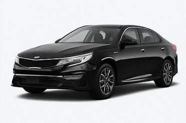

🪪 Паспорт водителя
Быстрый доступ к персональным данным
Водителей в базе
2
🚘 Паспорт автотранспорта
Учёт ТС, обслуживание и страхование
Транспортных средств
2
Водители
Все действующие и архивные сотрудники
| ФИО | Категория | Телефон | Статус | ТС |
|---|---|---|---|---|
| Ахметов Ахмет Ахметович | D | +7 777 777 77 77 | Работает | чёрный KIA K5 500UD |
| Серикова Алимa Аманжоловна | B, C | +7 702 111 22 33 | Работает | Hyundai County 777AAA |
Цифровой паспорт водителя — Ахметов Ахмет Ахметович
Работает
ИИН: 010101010101
Возраст: 24
Категория: D
Должность: водитель 1-й категории
Контактный телефон: +7 777 777 77 77
Экстренный телефон: +7 777 777 77 76 (Брат)
Дата принятия на учет: 01.01.2025
Водительский стаж: 5 лет
Источник: ЕКС. Отчетность: формирование отчетности по стажу работы.
ИИН: 010101010101
Категория: D
Стаж: 5 лет
Номер ВУ: 0204040404
Категории: D
Дата выдачи: 12.05.2022
Срок действия: 12.05.2032
Кем выдано: МВД РК
Источник: ЕКС. Отчетность: формирование отчетности по классности и водительскому стажу.
Медицинские ограничения: Нет
Источник: ЕКС. Отчетность: показатели по имеющимся ограничениям.
Последний медосмотр: 01.11.2024
Следующий медосмотр: 01.05.2025
Допуски: К управлению ТС без ограничений
Группа здоровья: основная, без ограничений
Больничные листы за год: 3 случая / 18 дней
Недопуски по медосвидетельствованию: 0 за последние 12 месяцев
Источник: АСУ / ЕКС. Отчетность: сведения о прохождении медосмотров, контроль сроков и аналитика по больничным.
Источник: ЕКС / АСУ. Отчетность: формирование сводных отчетов по персоналу.
- Индивидуальная карта прохождения инструктажей
- Сводка по нарушениям за период
- Выписка по медосмотрам
Закрепленное ТС: чёрный KIA K5 500UD
Дата назначения: 10.02.2025
Сменность: дневные смены
Допуск к спецтехнике: нет
История управления ТС: 3 различных ТС за последние 2 года
Источник: АСУ (акты закрепления). Отчетность: информация за какими ТС закреплен водитель.
Источник: ЕКС. Отчетность: учет обучения и инструктажей (ПДД, охрана труда, парамедики и др.).
| Курс | Дата | Статус |
|---|---|---|
| Инструктаж по охране труда | 10.01.2025 | пройден |
| Безопасное вождение | 20.02.2025 | пройден |
Источник: АСУ. Отчетность: аналитика по штрафам и ДТП, формирование профилактических уведомлений.
| Дата | Нарушение / ДТП | Статус |
|---|---|---|
| 15.03.2025 | Превышение скорости | закрыто |
| 04.04.2025 | Нарушение ПДД | штраф оплачен |
Источник: АСУ. Отчетность: учет инцидентов без ДТП (проколы, поломки по вине водителя, нарушения маршрута).
| Дата | Инцидент | Причина / комментарий |
|---|---|---|
| 05.05.2025 | Прокол колеса | попадание в яму, превышение скорости на участке |
| 21.06.2025 | Отклонение от маршрута | объезд пробки, без согласования с диспетчером |
Уровень утомляемости: умеренный
Ночных смен в месяц: 6
Переработка в месяц: 18 ч
Мин. перерыв между сменами: 11 часов
Рекомендации врача: избегать более 3 ночных смен подряд, обязательный отдых 2 дня после серии смен
Комментарий по рискам: повышенный риск утомляемости при длительных ночных сменах
Источник: АСУ. Отчетность: анализ психофизиологического состояния, прогноз рисков утомляемости.
4.7 / 5
Надежный
Основано на истории нарушений, своевременности ТО и отзывах диспетчера.
Автотранспорт
Действующие единицы автопарка
| ГРНЗ | Марка / модель | Год | VIN | Статус |
|---|---|---|---|---|
| KZ 123 UD | Kia Optima | 2017 | KNAGT4L36H5078567 | В работе |
| KZ 500 UD | Tesla Model 3 | 2021 | 5YJ3E1EA7JF000001 | В работе |
Цифровой паспорт автомобиля — Kia Optima

В работе
ГРНЗ: KZ 123 UD
VIN: KNAGT4L36H5078567
Марка / модель: Kia Optima
Классификация: легковой автомобиль
Год выпуска: 2017
Дата принятия на учет: 05.04.2017
Тип ТС: седан
Источник: АСУ. Отчетность: регистрационные данные по ТС.
ПТС: на руках
СТС: на руках
Комплектация: Premium
Ключи: 2 комплекта
Закреплен за водителем: Ахметов Ахмет Ахметович
Период закрепления: с 10.02.2025
Источник: ЕКС / АСУ. Отчетность: закрепление и эксплуатация ТС.
Стоимость покупки: 10 800 000 ₸
Текущая остаточная: 7 200 000 ₸
Амортизация: 36% (линейный метод)
Страховая оценка: 9 000 000 ₸
Источник: АСУ. Отчетность: стоимость, амортизация и переоценка ТС.
Двигатель: 2.0 л, бензин, 188 л.с.
КПП: автомат, 6 ст.
Привод: передний
Пробег: 88 000 км
Цвет: чёрный
VIN контроль: прошел
Источник: АСУ. Отчетность: технические характеристики и состояние.
Полис КАСКО: № KZ-404040 от 01.04.2024
Страхователь: АО "Надежда"
Франшиза: 50 000 ₸
Полис ОСАГО: № OS-2025-1001
Срок действия: 01.04.2024 — 31.03.2025
Источник: добавляется в АСУ. Отчетность: контроль сроков страхования с уведомлениями.
ТО и ремонты
| Дата | Работы | Пробег | Статус |
|---|---|---|---|
| 12.02.2025 | ТО-3 | 86 000 км | выполнено |
| 20.08.2024 | Замена тормозных колодок | 75 000 км | выполнено |
| 15.05.2024 | Балансировка колес | 68 000 км | выполнено |
Техосмотр
| Дата техосмотра | Результат | Следующий техосмотр |
|---|---|---|
| 10.03.2024 | пройден | 10.03.2025 |
| 05.03.2023 | пройден | 10.03.2024 |
Источник: АСУ. Отчетность: история ТО, ремонтов и техосмотров, прогноз следующих работ.
Источник: АСУ. Отчетность: аналитика по эксплуатации и стоимости владения.
- Отчет по эксплуатации за месяц
- Расход топлива и пробег
- Финансовый отчет по затратам
| Узел / запчасть | Износ | Следующая замена | Когда и кем установлено |
|---|---|---|---|
| Тормозные колодки | 60% | Через 8 000 км | СТО №1, мастер Иванов, 20.08.2024 |
| Шины (комплект летних) | 40% | Через 15 000 км | Шиномонтаж "Колесо", 01.04.2024 |
| АКБ | 20% | Норма | СТО №2, 10.10.2023 |
Источник: АСУ. Отчетность: анализ запчастей, история установки и износа.
GPS трекер: Установлен, онлайн
ДУТ (датчик уровня топлива): установлен
Тахограф: установлен
Дата следующей проверки тахографа: 01.09.2025
Последняя телеметрия: 09.12.2025 12:45
Сигнализация: Активна
Источник: АСУ. Отчетность: наличие GPS и доп. оснащения, контроль проверок тахографов.
| Работа | Пробег / срок | Ожидаемая дата |
|---|---|---|
| ТО-4 | через 4 000 км | Июнь 2025 |
| Замена масла | через 2 000 км | Март 2025 |
| Замена шин | через 15 000 км | Февраль 2026 |
| Замена колодок | через 8 000 км | Октябрь 2025 |
Источник: АСУ. Отчетность: прогноз следующего ТО, замены шин, колодок и др. узлов.
Анализ типичных проблем
| Узел | Проблематика | Частота |
|---|---|---|
| Подвеска | Стук на кочках | 1 раз / год |
| Электрика | Сбои датчика давления шин | 2 случая / год |
Простои
| Период | Дней простоя на ремонте | Комментарий |
|---|---|---|
| 2024 год | 12 | Плановые работы и 1 внеплановый ремонт |
| 2023 год | 8 | Преимущественно плановое ТО |
Источник: АСУ. Отчетность: аналитика поломок и дней простоя.
ДТП и повреждения
| Дата | Место | Описание |
|---|---|---|
| 12.03.2023 | Алматы | Легкое ДТП, без пострадавших |
| 08.11.2022 | Алматы | Повреждение бампера |
Кузовные и другие работы
| Тип работ | Дата |
|---|---|
| Кузовной ремонт, покраска заднего бампера | 12.04.2024 |
| Полировка кузова | 20.07.2023 |
Химчистка
| Тип работ | Дата |
|---|---|
| Полная химчистка салона | 01.06.2025 |
| Химчистка сидений и пола | 10.12.2024 |
Источник: АСУ. Отчетность: история ДТП, кузовных работ и чистки.
Прочие данные (место для дополнительных полей)